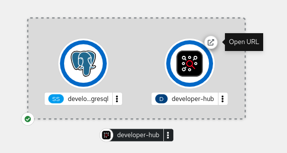

Installing Red Hat Developer Hub on OpenShift Container Platform
Running Red Hat Developer Hub on Red Hat OpenShift Container Platform by using either the Operator or Helm chart
Abstract
Platform administrators can configure roles, permissions, and other settings to enable other authorized users to deploy a Red Hat Developer Hub (RHDH) instance on Red Hat OpenShift Container Platform using either the Operator or Helm chart.
1. Red Hat Developer Hub installation methods on OpenShift Container Platform
You can install Red Hat Developer Hub on OpenShift Container Platform by using one of the following installers:
- The Red Hat Developer Hub Operator
- Ready for immediate use in OpenShift Container Platform after an administrator installs it with OperatorHub
- Uses Operator Lifecycle Management (OLM) to manage automated subscription updates on OpenShift Container Platform
- Requires preinstallation of Operator Lifecycle Management (OLM) to manage automated subscription updates on Kubernetes
- The Red Hat Developer Hub Helm chart
- Ready for immediate use in both OpenShift Container Platform and Kubernetes
- Requires manual installation and management
For guidance on choosing between the Helm chart and Operator based on your operational requirements and team capabilities, see Compare the Helm chart and Operator to choose the optimal deployment method.
You must set the baseUrl in app-config.yaml to match the external URL of your Developer Hub instance, such as https://<my_developer_hub_domain>. This value is required for the Red Hat Developer Hub to function correctly. If it is not set, front-end and back-end services cannot communicate properly, and features might not work as expected.
2. Install Red Hat Developer Hub on OpenShift Container Platform with the Operator
You can install Red Hat Developer Hub on OpenShift Container Platform by using the Red Hat Developer Hub Operator in the OpenShift Container Platform console.
2.1. Install the Red Hat Developer Hub Operator
As an administrator, you can install the Red Hat Developer Hub Operator. Authorized users can use the Operator to install Red Hat Developer Hub on Red Hat OpenShift Container Platform (OpenShift Container Platform) and supported Kubernetes platforms.
For more information about supported platforms and versions, see the Red Hat Developer Hub Life Cycle page.
Containers are available for the following CPU architectures:
-
AMD64 and Intel 64 (
x86_64)
Prerequisites
- You have logged in as an administrator on the OpenShift Container Platform web console.
- You have configured the appropriate roles and permissions within your project to create or access an application. For more information, see the Red Hat OpenShift Container Platform documentation on Building applications.
- You have installed Red Hat OpenShift Container Platform 4.18 to 4.21.
- Make sure that your system meets the minimum sizing requirements. See Sizing requirements for Red Hat Developer Hub.
You can upgrade Red Hat Developer Hub directly from any earlier version to the latest release without installing intermediate versions. However, you must review the release notes for every skipped version to identify breaking changes or required migration steps. For example, if upgrading from version 1.5 to 1.7, check the release notes for both 1.6 and 1.7.
Procedure
In the OpenShift Container Platform web console, find and install the Red Hat Developer Hub Operator from the software catalog.
For the detailed console steps, see Installing from the software catalog by using the web console in the Red Hat OpenShift Container Platform documentation.
On the Install Operator page, configure the following options:
From the Update channel drop-down menu, select fast or fast-1.10.
ImportantThe fast channel includes all of the updates available for a particular version. Any update might introduce unexpected changes in your Red Hat Developer Hub deployment. Check the release notes for details about any potentially breaking changes.
The fast-1.10 channel only provides z-stream updates, for example, updating from version 1.10.1 to 1.10.2. If you want to update the Red Hat Developer Hub y-version in the future, for example, updating from 1.10 to 2.1, you must switch to the fast-2.1 channel manually.
- From the Version drop-down menu, select the version of the Red Hat Developer Hub Operator that you want to install.
For Installation mode, keep the default All namespaces on the cluster option.
NoteThe Specific namespace on the cluster option is not currently supported.
For Installed Namespace, select Operator recommended Namespace to use the default rhdh-operator namespace.
ImportantFor enhanced security, better control over the Operator lifecycle, and preventing potential privilege escalation, install the Red Hat Developer Hub Operator in a dedicated default
rhdh-operatornamespace. You can restrict other users' access to the Operator resources through role bindings or cluster role bindings.You can also install the Operator in another namespace by creating the necessary resources, such as an Operator group. For more information, see Installing global Operators in custom namespaces.
However, if the Red Hat Developer Hub Operator shares a namespace with other Operators, then it shares the same update policy as well, preventing the customization of the update policy. For example, if one Operator is set to manual updates, the Red Hat Developer Hub Operator update policy is also set to manual. For more information, see Colocation of Operators in a namespace.
- Select the Update approval method and click Install.
Verification
- Navigate to Ecosystem > Installed Operators and verify that the Red Hat Developer Hub Operator status is Succeeded.
2.2. Provision your custom Red Hat Developer Hub configuration
Provision custom config maps and secrets on Red Hat OpenShift Container Platform (OpenShift Container Platform) to configure Red Hat Developer Hub before running the application.
On Red Hat OpenShift Container Platform, you can skip this step to run Developer Hub with the default config map and secret. Your changes on this configuration might get reverted on Developer Hub restart.
Prerequisites
-
By using the OpenShift CLI (
oc), you have access, with developer permissions, to the OpenShift cluster aimed at containing your Developer Hub instance.
Procedure
For security, store your secrets as environment variables values in an OpenShift Container Platform secret, rather than in plain text in your configuration files. Collect all your secrets in the
secrets.txtfile, with one secret per line inKEY=valueform.Author your custom
app-config.yamlfile. This is the main Developer Hub configuration file. You need a customapp-config.yamlfile to avoid the Developer Hub installer to revert user edits during upgrades. When your customapp-config.yamlfile is empty, Developer Hub is using default values.- To prepare a deployment with the Red Hat Developer Hub Operator on OpenShift Container Platform, you can start with an empty file.
To prepare a deployment with the Red Hat Developer Hub Helm chart, or on Kubernetes, enter the Developer Hub base URL in the relevant fields in your
app-config.yamlfile to ensure proper functionality of Developer Hub. The base URL is what a Developer Hub user sees in their browser when accessing Developer Hub. The relevant fields arebaseUrlin theappandbackendsections, andoriginin thebackend.corssubsection:Configuring the
baseUrlinapp-config.yaml:app: title: Red Hat Developer Hub baseUrl: https://<my_developer_hub_domain> backend: auth: externalAccess: - type: legacy options: subject: legacy-default-config secret: "${BACKEND_SECRET}" baseUrl: https://<my_developer_hub_domain> cors: origin: https://<my_developer_hub_domain>
Optionally, enter your configuration such as:
Author your custom
dynamic-plugins.yamlfile to enable plugins. By default, Developer Hub enables a minimal plugin set, and disables plugins that require configuration or secrets, such as the GitHub repository discovery plugin and the Role-based access control (RBAC) plugin.Enable the GitHub repository discovery and the RBAC features:
dynamic.plugins.yamlincludes: - dynamic-plugins.default.yaml plugins: - package: ./dynamic-plugins/dist/backstage-plugin-catalog-backend-module-github disabled: false - package: ./dynamic-plugins/dist/backstage-community-plugin-rbac disabled: falseProvision your custom configuration files to your OpenShift Container Platform cluster.
Create the <my-rhdh-project> project aimed at containing your Developer Hub instance.
$ oc create namespace my-rhdh-project
Create config maps for your
app-config.yamlanddynamic-plugins.yamlfiles in the <my-rhdh-project> project.$ oc create configmap my-rhdh-app-config --from-file=app-config.yaml --namespace=my-rhdh-project $ oc create configmap dynamic-plugins-rhdh --from-file=dynamic-plugins.yaml --namespace=my-rhdh-project
You can also create the config maps by using the web console.
Provision your
secrets.txtfile to themy-rhdh-secretssecret in the <my-rhdh-project> project.$ oc create secret generic my-rhdh-secrets --from-file=secrets.txt --namespace=my-rhdh-project
You can also create the secret by using the web console.
2.3. Use the Red Hat Developer Hub Operator to run Developer Hub with your custom configuration
Use the Red Hat Developer Hub Operator to deploy Developer Hub with custom configuration by creating a custom resource that mounts config maps and injects secrets.
Prerequisites
-
By using the OpenShift CLI (
oc), you have access, with developer permissions, to the OpenShift Container Platform cluster aimed at containing your Developer Hub instance. - Your administrator has installed the Red Hat Developer Hub Operator in the cluster.
-
You have provisioned your custom config maps and secrets in your
<my-rhdh-project>project. - You have a working default storage class, such as the Elastic Block Store (EBS) storage add-on, configured in your EKS cluster.
Procedure
Author your Backstage CR in a
my-rhdh-custom-resource.yamlfile to use your custom config maps and secrets.Minimal
my-rhdh-custom-resource.yamlcustom resource example:apiVersion: rhdh.redhat.com/v1alpha5 kind: Backstage metadata: name: my-rhdh-custom-resource spec: application: appConfig: mountPath: /opt/app-root/src configMaps: - name: my-rhdh-app-config extraEnvs: secrets: - name: <my_product_secrets> extraFiles: mountPath: /opt/app-root/src route: enabled: true database: enableLocalDb: truemy-rhdh-custom-resource.yamlcustom resource example with dynamic plugins and RBAC policies config maps, and external PostgreSQL database secrets:apiVersion: rhdh.redhat.com/v1alpha5 kind: Backstage metadata: name: <my-rhdh-custom-resource> spec: application: appConfig: mountPath: /opt/app-root/src configMaps: - name: my-rhdh-app-config - name: rbac-policies dynamicPluginsConfigMapName: dynamic-plugins-rhdh extraEnvs: secrets: - name: <my_product_secrets> - name: my-rhdh-database-secrets extraFiles: mountPath: /opt/app-root/src secrets: - name: my-rhdh-database-certificates-secrets key: postgres-crt.pem, postgres-ca.pem, postgres-key.key route: enabled: true database: enableLocalDb: false
- Mandatory fields
- No fields are mandatory. You can create an empty Backstage CR and run Developer Hub with the default configuration.
- Optional fields
spec.application.appConfig.configMaps- Enter your config map name list.
Mount files in the
my-rhdh-app-configconfig map:spec: application: appConfig: mountPath: /opt/app-root/src configMaps: - name: my-rhdh-app-configMount files in the
my-rhdh-app-configandrbac-policiesconfig maps:spec: application: appConfig: mountPath: /opt/app-root/src configMaps: - name: my-rhdh-app-config - name: rbac-policiesspec.application.extraEnvs.envsOptionally, enter your additional environment variables that are not secrets, such as your proxy environment variables.
Inject your
HTTP_PROXY,HTTPS_PROXYandNO_PROXYenvironment variables:spec: application: extraEnvs: envs: - name: HTTP_PROXY value: 'http://10.10.10.105:3128' - name: HTTPS_PROXY value: 'http://10.10.10.106:3128' - name: NO_PROXY value: 'localhost,example.org'spec.application.extraEnvs.secretsEnter your environment variables secret name list.
Inject the environment variables in your Red Hat Developer Hub secret:
spec: application: extraEnvs: secrets: - name: <my_product_secrets>Inject the environment variables in the Red Hat Developer Hub and
my-rhdh-database-secretssecrets:spec: application: extraEnvs: secrets: - name: <my_product_secrets> - name: my-rhdh-database-secretsNote<my_product_secrets>is your preferred Developer Hub secret name, specifying the identifier for your secret configuration within Developer Hub.spec.application.extraFiles.secretsEnter your certificates files secret name and files list.
Mount the
postgres-crt.pem,postgres-ca.pem, andpostgres-key.keyfiles contained in themy-rhdh-database-certificates-secretssecret:spec: application: extraFiles: mountPath: /opt/app-root/src secrets: - name: my-rhdh-database-certificates-secrets key: postgres-crt.pem, postgres-ca.pem, postgres-key.keyspec.database.enableLocalDbEnable or disable the local PostgreSQL database.
Disable the local PostgreSQL database generation to use an external postgreSQL database:
spec: database: enableLocalDb: falseOn a development environment, use the local PostgreSQL database:
spec: database: enableLocalDb: truespec.deployment- Optionally, enter your deployment configuration.
Apply your Backstage CR to start or update your Developer Hub instance:
$ oc apply --filename=my-rhdh-custom-resource.yaml --namespace=my-rhdh-project
3. Install Red Hat Developer Hub on OpenShift Container Platform with the Helm chart
You can install Red Hat Developer Hub on OpenShift Container Platform by using the Helm chart with one of the following methods:
- The OpenShift Container Platform console
- The Helm CLI
3.1. Deploy Developer Hub from the OpenShift Container Platform web console with the Helm Chart
You can use a Helm chart to install Developer Hub on the Red Hat OpenShift Container Platform web console.
Helm is a package manager on OpenShift Container Platform that provides the following features:
- Applies regular application updates using custom hooks
- Manages the installation of complex applications
- Provides charts that you can host on public and private servers
- Supports rolling back to earlier application versions
The Red Hat Developer Hub Helm chart is available in the Helm catalog on OpenShift Dedicated and OpenShift Container Platform.
Prerequisites
- You have logged in to your OpenShift Container Platform account.
-
A user with the OpenShift Container Platform
adminrole has configured the appropriate roles and permissions within your project to create an application. For more information about OpenShift Container Platform roles, see Using RBAC to define and apply permissions. - You have created a project in OpenShift Container Platform. For more information about creating a project in OpenShift Container Platform, see Red Hat OpenShift Container Platform documentation.
- Make sure that your system meets the minimum sizing requirements. See Sizing requirements for Red Hat Developer Hub.
Procedure
- From the Developer perspective on the Developer Hub web console, click +Add.
- From the Developer Catalog panel, click Helm Chart.
- In the Filter by keyword box, enter Developer Hub and click the Red Hat Developer Hub card.
- From the Red Hat Developer Hub page, click Create.
-
From your cluster, copy the OpenShift Container Platform router host (for example:
apps.<clusterName>.com). Select the radio button to configure the Developer Hub instance with either the form view or YAML view. The Form view is selected by default.
Using Form view
- To configure the instance with the Form view, go to Root Schema → global → Enable service authentication within Red Hat Developer Hub instance and paste your OpenShift Container Platform router host into the field on the form.
Using YAML view
To configure the instance with the YAML view, paste your OpenShift Container Platform router hostname in the
global.clusterRouterBaseparameter value as shown in the following example:global: auth: backend: enabled: true clusterRouterBase: apps.<clusterName>.com
- Edit the other values if needed.
- Click Create and wait for the database and Developer Hub to start.
Click the Open URL icon to start using the Developer Hub platform.

NoteThe host information is copied and can be accessed by the Developer Hub backend.
When an OpenShift Container Platform route is generated automatically, the host value for the route is inferred and the same host information is sent to the Developer Hub. Also, if the Developer Hub is present on a custom domain by setting the host manually using values, the custom host takes precedence.
Troubleshooting
Your
developer-hubpod might be in aCrashLoopBackOffstate if the Developer Hub container cannot access the configuration files. This error is indicated by the following log:Loaded config from app-config-from-configmap.yaml, env ... 2023-07-24T19:44:46.223Z auth info Configuring "database" as KeyStore provider type=plugin Backend failed to start up Error: Missing required config value at 'backend.database.client'
To resolve the error, verify the configuration files.
3.2. Deploy Developer Hub on OpenShift Container Platform with the Helm CLI
You can use the Helm CLI to install Red Hat Developer Hub on Red Hat OpenShift Container Platform.
Prerequisites
-
You have installed the OpenShift CLI (
oc) on your workstation. - You have logged in to your OpenShift Container Platform account.
- A user with the OpenShift Container Platform admin role has configured the appropriate roles and permissions within your project to create an application. For more information about OpenShift Container Platform roles, see Using RBAC to define and apply permissions.
- You have created a project in OpenShift Container Platform. For more information about creating a project in OpenShift Container Platform, see Red Hat OpenShift Container Platform documentation.
- You have installed the Helm CLI tool.
Procedure
Create and activate the <my-rhdh-project> OpenShift Container Platform project:
NAMESPACE=<emphasis><rhdh></emphasis> oc new-project ${NAMESPACE} || oc project ${NAMESPACE}Install the Red Hat Developer Hub Helm chart:
helm upgrade redhat-developer-hub -i https://github.com/openshift-helm-charts/charts/releases/download/redhat-redhat-developer-hub-1.10.1/redhat-developer-hub-1.10.1.tgz
Configure your Developer Hub Helm chart instance with the Developer Hub database password and router base URL values from your OpenShift Container Platform cluster:
PASSWORD=$(oc get secret redhat-developer-hub-postgresql -o jsonpath="{.data.password}" | base64 -d) CLUSTER_ROUTER_BASE=$(oc get route console -n openshift-console -o=jsonpath='{.spec.host}' | sed 's/^[^.]*\.//') helm upgrade redhat-developer-hub -i "https://github.com/openshift-helm-charts/charts/releases/download/redhat-redhat-developer-hub-1.10.1/redhat-developer-hub-1.10.1.tgz" \ --set global.clusterRouterBase="$CLUSTER_ROUTER_BASE" \ --set global.postgresql.auth.password="$PASSWORD"Display the running Developer Hub instance URL:
echo "https://redhat-developer-hub-$NAMESPACE.$CLUSTER_ROUTER_BASE"
Verification
- Open the running Developer Hub instance URL in your browser to use Developer Hub.
Additional resources